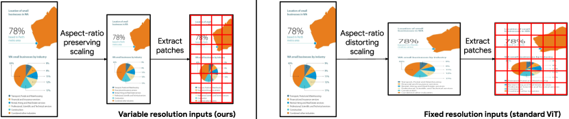

Pix2Struct: Screenshot Parsing as Pretraining for
Visual Language Understanding
Abstract
Visually-situated language is ubiquitous—sources range from textbooks with diagrams to web pages with images and tables, to mobile apps with buttons and forms. Perhaps due to this diversity, previous work has typically relied on domain-specific recipes with limited sharing of the underlying data, model architectures, and objectives. We present Pix2Struct, a pretrained image-to-text model for purely visual language understanding, which can be finetuned on tasks containing visually-situated language. Pix2Struct is pretrained by learning to parse masked screenshots of web pages into simplified HTML. The web, with its richness of visual elements cleanly reflected in the HTML structure, provides a large source of pretraining data well suited to the diversity of downstream tasks. Intuitively, this objective subsumes common pretraining signals such as OCR, language modeling, and image captioning. In addition to the novel pretraining strategy, we introduce a variable-resolution input representation and a more flexible integration of language and vision inputs, where language prompts such as questions are rendered directly on top of the input image. For the first time, we show that a single pretrained model can achieve state-of-the-art results in six out of nine tasks across four domains: documents, illustrations, user interfaces, and natural images.
1 Introduction
Research on the interaction between language and vision has traditionally focused on tasks where images and text can be separated into distinct channels, e.g. visual question answering or image captioning. However, visually-situated language is a far more pervasive way in which these modalities interact and blend together. For example, documents, tables, infographics, and user interfaces (UIs) are intended to be consumed holistically, without clear boundaries between textual and visual elements (Figure 1). Comprehensive understanding of this information requires a deep set of skills, including the ability to recognize text, understand language, and incorporate diverse visual context.
Previous work on understanding visually-situated language is scattered. The focus is typically on complex task-specific combinations of available inputs and tools. For example, document-understanding models (Huang et al., 2022) rely on external OCR systems, UI-understanding models rely on platform-specific metadata (e.g. Android view hierarchy) (Bai et al., 2021), and diagram-understanding models rely on diagram parses (Kembhavi et al., 2016). Domain-specific engineering can be effective for high-resource settings such as documents, where there is an abundance of tools and data available. However, these pipelined models lack sharing of the underlying data, model architectures, and objectives across domains, limiting their general applicability. Moreover, relying on external systems like OCR increases engineering complexity, limits adaptability, and can increase overall computational cost. Recent work on OCR-free, end-to-end document understanding from images (Kim et al., 2022; Davis et al., 2022) has attempted to remove such task-specific engineering and reliance on external components during inference by learning to decode OCR outputs during pretraining—a significant step towards more general-purpose models. However, the focus on text at the surface level limits the depth of knowledge transferred from unsupervised data.
Screenshot Parsing Pretraining
AI2D
Screen2Words
DocVQA
<<Pro> <<<$15> </mo>> <<20 users included> <10 GB of storage> <Priority email support> <Help center access>> <Get started>>>
carnivore
list of videos for weather reports in different locations
Fred LeCrone
We present Pix2Struct222For pretrained checkpoints and code, see https://github.com/google-research/pix2struct., a pretrained model that combines the simplicity of purely pixel-level inputs with the generality and scalability provided by self-supervised pretraining from diverse and abundant web data. Specifically, we propose a screenshot parsing objective that requires predicting an HTML-based parse from a masked screenshot of a web page. HTML provides clean signals about text, images, and layouts, while the masked inputs encourage joint reasoning about their co-occurrence. With the diversity and complexity of textual and visual elements found on the web, Pix2Struct learns rich representations of the underlying structure of web pages, which we show can effectively transfer to a variety of downstream visual language understanding tasks.
A key ingredient which enables this transfer is processing inputs visually and holistically as they are intended for human readers. We introduce variable-resolution inputs for vision transformers (ViT) that prevent distortion of the original aspect ratio, which can vary greatly across documents, figures, and UIs. During finetuning, we render other inputs (e.g., questions in VQA and bounding boxes in UI tasks) onto the image input for the task. In effect, we consume all our inputs through a single modality, simplifying the modality combination problem in previous work.
We train two variants with 282M and 1.3B parameters, which we refer to as Pix2Struct-Base and Pix2Struct-Large respectively, on 80M screenshots of web pages collected from the URLs in the C4 corpus (Raffel et al., 2020)333We do not use the released text in C4. The web page content and screenshots were crawled directly from the URLs.. Experiments on four domains and nine tasks show that our finetuned models strongly outperform Donut (ranging from 9 to 53 points), the strongest existing baseline without pipelines. Compared with models with domain-specific pipelines, we lag behind the state of the art in high-resource domains such as documents and natural images but observe significant improvements (ranging from 1 to 44 points) in low-resource domains such as illustrations and UIs. We hope these results encourage the community to continue developing such general-purpose methods and further enable new applications in this currently fragmented intersection of language and vision.
To summarize, our major contributions are as follows:
-
•
We introduce the area of general-purpose visually-situated language understanding, which consists of diverse tasks but common challenges.
-
•
We propose a screenshot parsing pretraining objective based on the HTML source of web pages. Our objective is shown to be more effective than prior attempts to enable the elegant pixel-to-text design for general-purpose visually-situated language understanding.
-
•
We introduce variable-resolution input representations to ViT and new fine-tuning strategies that seamlessly integrate language and vision inputs by directly rendering any text prompts on top of the input image.
2 Method
2.1 Background
Prior attempts at pixel-only modeling of visually situated language have largely focused on documents and natural images. For documents, Donut (Kim et al., 2022) and Dessurt (Davis et al., 2022) combine pretrained objectives based on surface-level features from synthetic images or predicted OCR outputs. For natural images, recent work—GIT2 (Wang et al., 2022a) and PaLI (Chen et al., 2022c)—focuses on collecting and training on large scale image captioning data that transfers well to datasets with natural images (e.g. TextCaps).
We aim to provide a single pretrained model that can be finetuned on a wider variety of tasks and domains. The input to our model is an image in the form of raw pixels only, and the output is text in the form of token sequences, similar to Donut. The goal is a visual analog of models like T5 (Raffel et al., 2020), where the generality of simple inputs and outputs is combined with the power of pretraining on large unsupervised sources of data. During finetuning, the complexity of adapting to diverse downstream tasks resides only in data preprocessing.
Even without visual context, pixel-only language modeling for text has only recently been attempted (Rust et al., 2022)—perhaps because it requires solving multiple hard sub-problems. First, the ability to read with high fidelity while also building rich high-level representations poses a difficult optimization problem. Second, encoding text-heavy inputs (e.g. long documents) involves processing high-resolution images with variable aspect ratios. State-of-the-art document understanding models (Huang et al., 2022) therefore rely on the combination of (possibly noisy) OCR outputs with low resolution images.
We show the components of Pix2Struct that address these challenges. Section 2.2 discusses modifications to the transformer inputs to handle variable aspect ratios and resolutions. Section 2.3 details our proposed screenshot parsing objective and Section 2.4 describes curriculum learning for more robust transfer learning. Finally, Section 2.5 shows how Pix2Struct consumes textual and visual inputs for downstream tasks (e.g. questions and images) in the same space by rendering text inputs onto images.
2.2 Architecture

Pix2Struct is an image-encoder-text-decoder based on ViT (Dosovitskiy et al., 2021). While the bulk of the model is fairly standard, we propose one small but impactful change to the input representation to make Pix2Struct more robust to various forms of visually-situated language. Before extracting fixed-size patches, the standard ViT scales the input images to a predefined resolution, which creates two undesirable effects: (1) rescaling the image distorts the true aspect ratio, which can be highly variable for documents, mobile UIs, and figures. (2) transferring these models to downstream tasks with higher resolution is non-trivial (Touvron et al., 2019; Wang et al., 2021b), since the model only observes one specific resolution during pretraining.
We instead propose to always scale our input image up or down such that we extract the maximal number of fixed-size patches that fit within the given sequence length (Figure 2). In order for the model to handle variable resolutions unambiguously, we use 2-dimensional absolute positional embeddings for the input patches. Together these changes to the standard ViT inputs provide two major advantages in terms of robustness to: (1) extreme aspect ratios, which is common in the domains that we experiment with, and (2) on-the-fly changes to the sequence length and resolution.
2.3 Pretraining
The goal of pretraining is for Pix2Struct to represent the underlying structure of the input image. To that end, we create self-supervised pairs of input images and target text from web pages. For each page in the pretraining corpus, we start by collecting its HTML source and a screenshot using a viewport of 1024 x 1024.
Screenshot parsing inputs & outputs The screenshot and HTML are modified to ensure rich and dense learning signal during pretraining. These modifications provide a reasonable trade-off between preserving the semantics of the page and requiring a practical decoder sequence length.
We condense the HTML DOM tree by (1) only keeping nodes with visible elements or descendants with visible elements and (2) if a node does not contain visible elements and it only has a single child, replacing the singleton child with any grandchildren to remove chained nesting. In each node, we only use the text, along with filenames and alt-text of images. Much more information could be retained (e.g. element tags, style, titles and URLs) in future work. The decoder sequence length is further reduced by finding the largest linearized subtree that fits within a predefined sequence length. A bounding box indicating the region covered by the chosen subtree is also drawn on the screenshot.
For better context modeling, we introduce a BART-like (Lewis et al., 2020) learning signal by masking 50% of the text and decoding the entire subtree. The masked regions are randomly sampled spans of text from the chosen subtree where we render masks (Figure 3).
:
<<<Python> <img_src=py_logo.png img_alt=Python>> <<C++> <img_src=cpp_logo.png img_alt=C++>> <<Java> <img_src=java_logo.png img_alt=Java>> <Submit>>
Comparison to existing pretraining strategies Our proposed screenshot parsing seamlessly integrates signals reminiscent of several well-known pretraining strategies:
-
•
Recovering the unmasked parts of the parse is similar to OCR, a prerequisite skill for understanding language. OCR pretraining was proposed in Donut which uses synthetic renderings or OCR outputs. In Figure 3, predicting <C++> exemplifies this learning signal.
- •
-
•
Recovering the alt-text from images is a common pretraining strategy for image captioning (Sharma et al., 2018; Wang et al., 2022a; Chen et al., 2022c). A major difference is that the model is permitted to use the web page as additional context. In Figure 3, predicting img_alt=C++ exemplifies this learning signal.
Appendix F contains more details including examples of screenshots paired with their gold and predicted parses.
2.4 Warming up with a reading curriculum
While we can directly pretrain Pix2Struct on the screenshot parsing task, we find that doing this naively can result in instability and slow learning. However, if we first expose the model to a short “warmup” stage of simply learning to read, we find a strong curriculum learning effect where (1) pretraining is more stable and converges faster, and (2) we observe better finetuning performance, as discussed in Section 5. We create images of text snippets with random colors and fonts. The model is simply trained to decode the original text (see Appendix E for examples). This type of curriculum learning was also used in Dessurt (Davis et al., 2022) and can also be viewed as a simplified version of Donut’s pretraining.
2.5 Finetuning
Finetuning Pix2Struct is straightforward and largely a matter of preprocessing the downstream data to unambiguously reflect the task in the image inputs and text outputs, analogous to the way T5 (Raffel et al., 2020) is used for text-based tasks. In this section, we cover the preprocessing strategies for the tasks described in Table 4. Examples of this preprocessing are shown in Figure 1.
Captioning is the most straightforward, since the input image and the output text can be directly used (as in TextCaps, Screen2Words). In the case where the focus of the caption is a specific bounding box (as in Widget Captioning), we draw the target bounding box on the image itself.
For visual question answering (as in OCR-VQA, ChartQA, DocVQA, InfographicsVQA), while multimodal models typically reserve a specialized text channel for the question, we opt to instead directly render the question as a header at the top of the original image. Pix2Struct reads both the question and the image jointly via the visual modality. This strategy is analogous to the common practice of simply concatenating all inputs during finetuning of pretrained text models, first proposed in GPT (Radford et al., 2018) and has been the default method in NLP since then. Intuitively, this strategy is effective because Pix2Struct has been pretrained to be sensitive to long-range interactions between various parts of the input image. In the case of multiple choice answers (as in AI2D), we also render the choices in the header as part of the question.
The most complex scenario is RefExp, where the task is choosing between UI components that a natural language expression could be referring to. For each candidate, we create a training instance where the input image contains the bounding box and referring expression, and the decoding target is “true” or “false”. We sample five negative candidates per positive candidate during training. During inference, we pick the candidate for which the model generates “true” with the highest score.444or lowest score if something other than “true” was generated
3 Experimental Setup
3.1 Benchmarks
We evaluate Pix2Struct on multiple benchmarks for visually-situated language understanding across four domains: illustrations, user interfaces, natural images, and documents. Since we are the first to aggregate datasets with this scope, we optimized for diversity in domains and in task-format. Evaluation is restricted to standard splits without additional labeled data. Table 4 in Appendix C provides a summary of the datasets with details in Section 4.
We use evaluation metrics as defined in the original papers: (a) average normalized Levenshtein similarity (ANLS) for DocVQA and InfographicVQA, (b) exact match (EM) for AI2D, RefExp, and OCR-VQA, (c) relaxed accuracy (RA) for ChartQA, and (d) CIDEr for the generation tasks.
3.2 Implementation and Baselines
Pretraining We pretrain two model variants: (a) a base model with 282M parameters including 12 encoder and 12 decoder layers with a hidden size of 768, and (b) a large model with 1.3B parameters including 18 layers with a hidden size of 1536. Both models have the same warmup stage using text rendered from BooksCorpus (Zhu et al., 2015) lasting 30K steps with a maximum input sequence length of 128 patches. The base model is then pretrained further for 270K steps with the screenshot parsing objective using a batch size of 2048 on 64 Google Cloud TPUs. The large model is pretrained for 170K steps with a batch size of 1024 on 128 Google Cloud TPUs. Both models use an input sequence length of 2048 patches and are optimized using Adafactor (Shazeer & Stern, 2018). The learning rate schedule uses a linear warmup of 1000 steps to 0.01, followed by cosine decay to 0. The decoder sequence length is 128 tokens, and we choose pretraining targets to have at most 1024 characters. As a reference point, the base model reaches 30 BLEU and the large model reaches 32 BLEU on the pretraining validation set. Details about finetuning can be found in Appendix D.
Baselines Across all tasks, we found a large number of methods which could serve as baselines. We compare Pix2Struct against state of the art (SotA) methods in each domain (see Section 4 for method descriptions). Several methods use model ensembles, multitask with labeled training data from other datasets (Powalski et al., 2021; Wang et al., 2022a), or train with validation data (Li et al., 2021a). For fair comparison and ease of experimentation, we focus on single-model and single-task baselines trained on standard splits. Several (per-task) SotA (Li et al., 2021b; Masry et al., 2022) use domain-specific inputs (e.g. view hierarchies for UIs or gold data tables for charts) making it difficult to apply them to other domains. For a strong, consistent visual baseline across domains, we finetuned Donut on tasks where a purely visual baseline was unavailable.555Except RefExp due to the complexity inference.
4 Results
Table 1 compares Pix2Struct with prior work.
| Method | Pretraining | ChartQA | AI2D | OCR VQA | Ref Exp | Widget Cap | Screen2 Words | Text Caps | DocVQA | Info VQA | |
| State of the art w/ pipelines | - | (VTP) 45.5 | (DQAN) 38.5 | (LATr) 67.5 | (UIB) 90.8 | (VUT) 97.0 | (VUT) 64.3 | (PaLI) 160.4 | (UDOP) 84.7 | (UDOP) 47.4 | |
| Pixel only | GIT2 | Image captioning | - | - | 70.3 | - | - | - | 145.0 | - | - |
| Donut | OCR | 41.8 | 30.8 | 66.0 | - | 127.4 | 56.4 | 74.4 | 67.5 | 11.6 | |
| Pix2Struct | |||||||||||
| Base | Screenshot parsing | 56.0 | 40.9 | 69.4 | 92.2 | 133.1 | 107.0 | 88.0 | 72.1 | 38.2 | |
| Large | Screenshot parsing | 58.6 | 42.1 | 71.3 | 94.2 | 136.7 | 109.4 | 95.5 | 76.6 | 40.0 | |
4.1 Illustrations
ChartQA (Masry et al., 2022) is a VQA dataset with questions based on charts, i.e. visual representations of tabular data.666We evaluate on the task without the gold data table.. VisionTaPas (Masry et al., 2022), the current SotA, is a pipeline which operates on data tables predicted from the given charts. It consists of (1) a ViT encoder for encoding the chart image, (2) a TaPas encoder for encoding the question and the data table, and (3) a cross-modal encoder. In contrast, Pix2Struct does not rely on table extractors and uses the chart directly—improving the SotA from 45.5 to 58.6 with the large variant.
AI2D (Kembhavi et al., 2016) contains multiple choice questions based on illustrative science diagrams (about geological processes, biological structures etc.). The dataset comes with train and test splits. We set aside 1% of the train split for validation. The current SotA DQA-NET (Kembhavi et al., 2016) focuses on modeling entity relationships via a pipeline of tools for extracting arrows, blobs, and other visual elements. Pix2Struct-Large outperforms DQA-NET and Donut by 3.6 and 11.27 points respectively without any domain-specific modifications.
OCR-VQA (Mishra et al., 2019) is a VQA dataset on images of book covers. The questions are based on book metadata such as title, author, genre etc. Much of work on OCR-VQA, including the pipeline SotA LATr (Biten et al., 2022), uses off-the-shelf OCR. Recent work, GIT2 (Wang et al., 2022a), the current SotA, is pretrained on 12.9B image caption pairs. Their final finetuning stage is preceded by intermediate finetuning on eight VQA datasets including VQAv2 (Goyal et al., 2017), VizWiz-VQA (Chen et al., 2022a), and OCR-VQA (Mishra et al., 2019) amongst others. Despite not using more labeled training data, we outperform GIT2 by almost 1 point.
4.2 UIs
RefExp (Bai et al., 2021) Given a natural language referring expression, an app screenshot, and a set of components (via bounding boxes on the screenshot), the goal is to retrieve the component that the expression refers to. UIBert (Bai et al., 2021), the current SotA, is pretrained on a combination of inputs from mobile apps including screenshots, OCR text, and Android view hierarchies. Our models substantially ourperform UI Bert by 1.4 and 3.4% absolute, with Pix2Struct-Large setting the new SotA.
Widget Captioning (Li et al., 2020b) is an image captioning task where the input is an app screenshot annotated with a single bounding box denoting a widget (e.g. a button or a scroll bar). The caption describes the functionality of the widget (e.g. find location). VUT (Li et al., 2021b), the current SotA uses a specialized UI encoder combining images, bounding boxes, and view hierarchies. Pix2Struct-Large improves the SotA CIDEr from 127.4 to 136.7.
4.3 Natural Images
TextCaps Recently, GIT2 (5.1B parameters) and PaLI (17B parameters) have advanced the state of the art on TextCaps by pretraining on 10B+ image-caption pairs extracted from the web. PaLI (CIDEr 135.4) and GIT2 (CIDEr 145) show comparable performance without OCR inputs. PaLI achieves SotA (CIDEr 160.4) performance when finetuned with OCR, indicating that even for large-scale methods, end-to-end pixel-only performance lags behind pipeline SotA. While their image captioning-based pretraining understandably improves TextCaps, previous work (Kim et al., 2022) shows that captioning may not transfer to other domains (e.g. documents). Moreover, screenshot parsing subsumes signals from captioning (Section 2.3) while using a fraction of the data used for pretraining GIT2 and PaLI. These results suggest that Pix2Struct could further benefit from scaling in pretraining data and model size.
4.4 Documents
DocVQA (Mathew et al., 2021) is a dataset of questions about scanned documents,777from the UCSF Industry Documents Library https://www.industrydocuments.ucsf.edu including typewritten, printed, handwritten and born-digital text. Pix2Struct-Large outperforms Donut, the previous visual SotA on DocVQA by 9 points. Top-performing single-task methods like UDOP (Tang et al., 2022) (ANLS 84.7) typically use three components: (a) an off-the-shelf OCR system, (b) pretrained text and image encoders, and (c) additional pretraining on the IIT-CDIP scanned documents corpus. Despite using purely visual representations and no in-domain pretraining data, Pix2Struct achieves competitive performance (ANLS 76.6).
InfographicVQA (Mathew et al., 2022) is a dataset of questions about infographics from the web. A unique challenge of this dataset is its large images with extreme aspect ratios. Donut scales images to a fixed aspect ratio, which we speculate is the cause of its poor performance with an ANLS of 11.6. Pix2Struct-Large sets the state of the art amongst visual models with an ANLS of 40.
For both DocVQA and InfographicVQA, text-only baselines are at or near the state of the art. A T5-based model (T5 + 2D + U) with 2D positional biases (Borchmann et al., 2021) achieves ANLS of 81 on DocVQA and 46.1 on InfographicVQA. This is in part due to the text-heavy nature of the data (especially DocVQA) where visual context plays a lesser role, and the more mature pretrained text-based encoders can do the heavy lifting.
Common trends Overall, Pix2Struct outperforms Donut in all tasks, underscoring the effectiveness of our pretraining. We also advance the single-task state of the art on six of nine benchmarks across four domains. Scaling up from base to large results in considerable improvements on all tasks despite the base model being trained for 3 more iterations than the large model. Previous work (Liu et al., 2019; Raffel et al., 2020) has shown that large batch sizes and many training steps contribute greatly to the quality of the pretrained model. Results indicate that further scaling up of Pix2Struct is a promising direction.
5 Analysis
| Pretraining | Doc VQA | Widget Captioning | TextCaps |
| Full | 67.8 | 137.5 | 84.2 |
| – Warmup | 56.2 | 128.0 | 71.7 |
| – Masking | 55.7 | 129.4 | 77.4 |
| – Screenshot Parsing | 12.2 | 35.1 | 24.2 |
Ablating pretraining objectives Table 2 analyzes the importance of each component of our pretraining recipe on DocVQA, Widget Captioning, and TextCaps validation sets. The full pretraining method consists of a warmup reading stage on the BooksCorpus followed by pretraining using the screenshot parsing objective. For these experiments, we use the base variant with a total of 100K steps of pretraining including 30K warmup steps followed by 70K steps of screenshot parsing. The screenshot parsing ablation removes the screenshot parsing stage altogether and uses an extended warmup stage of 100K steps. The warmup ablation skips the warmup stage and directly pretrains from random initialization for 100K steps. The masking ablation uses 30K steps warmup followed by 70K steps of screenshot parsing without masking.888All models use the same hyperparameters.
The biggest drop in performance comes from ablating the screenshot parsing stage, effectively reducing the pretraining to reading linear text. Ablating the warmup and masking is nearly equivalent on DocVQA and Widget Captioning while the warmup is slightly more important in TextCaps. Overall, our results seem to indicate that reading and understanding visually-situated language is a complex problem involving skills including recognizing text, understanding language, and incorporating visual context.
Ablating variable-resolution inputs Figure 4 compares various ways to convert input images into a constant number of patches. This ablation is performed on the warmup stage (Section 2.4), where we measure full sequence accuracy. The ‘padded’ variant maintains the original aspect ratio, but introduces significant padding, which sacrifices the effective resolution. The ‘stretched’ variant, typically used in ViT, introduces no padding but distorts the original image. Our variable-resolution inputs get the best of both worlds by maintaining the original aspect ratio while maximally utilizing the budget specified by the sequence length. Experiments in Appendix A show that this benefit leads to more effective learning, even for a task as simple as transcribing text in the input image.
6 Discussion
This section lays out some of the challenges in training general-purpose visual language understanding models, and discuss a road map for future work.
Resolution Like Donut, we found that pretraining and finetuning performance are extremely sensitive to the input resolutions.999See Appendix A for a concrete comparison. The difficulty in using high-resolution images has been a bottleneck for pixel-only models since higher resolutions often lead to longer sequence lengths. This bottleneck has in part been responsible for the dominance of OCR-based pipelines which are able to use lower image resolutions due to a dedicated text encoder.101010OCR pipelines, while noisy, often result in manageable sequence lengths for large-scale text encoders. However, steady progress with Donut and Pix2Struct combined with recent progress in long range transformers (Press et al., 2022) provides hope that pixel-only models will bridge the gap with OCR-based pipelines.
The visual web As a first attempt towards a general-purpose visual language understanding model, we focused on simplicity both in terms of how we use the HTML source and our choice for the pretraining corpus, C4—a known public corpus used in previous work (Raffel et al., 2020) that is significantly smaller and narrower than corpora used to train the largest language models today. However, web data includes even richer multimodal signals such as videos and interactions. We posit that future versions of general-purpose visual language understanding models will benefit from better data curation. This opportunity also comes with a caveat: just like text-based models, we must be careful of harmful content on the web, which multimodal models would also be sensitive to.
Generality While we have focused on general pixel-only models, we do acknowledge that using OCR-pipelines or metadata can be appropriate or even necessary in certain domains. For NLP, the scaling of pretrained text based models has led to not only simpler model architectures and preprocessing, but also emergent abilities on newer tasks which were hitherto considered far too difficult (Wei et al., 2022). A general-purpose model may also enable broader applications for visual language, e.g. filling in missing accessibility annotations (Zhang et al., 2021). Finally, given that the overwhelming majority of prior work has leveraged OCR-based features, it seems necessary to advance OCR-free alternatives (as this paper does) in order to enable a clearer longer-term understanding around the proper role for OCR. The broader objective of this work is to bring pretraining for visually-situated language understanding a step closer to text-based counterparts and pave the way for similar benefits from data and model scaling.
7 Related Work
To the best of our knowledge, no prior work has pretrained and evaluated a visually-situated language understanding model on tasks spanning all four domains of documents, illustrations, user interfaces, and natural images. 111111Some prior approaches have been evaluated on two domains. We build on prior work primarily focused on a single domain and briefly highlight the similarities as well as the points of departure with respect to such work here.
Document understanding State-of-the-art models in this domain are based on a pipeline of an external OCR system and a model that combines images and OCR annotations (Appalaraju et al., 2021; Powalski et al., 2021; Xu et al., 2021), inter alia. Prominent representatives are LayoutLMv3 (Huang et al., 2022), which uses a simplified transformer-based architecture and losses that encourage patch–OCR alignment. TILT (Powalski et al., 2021) pretrains a text decoder and an image + OCR-output encoder followed by intermediate finetuning on multiple QA tasks. Pix2Struct is more closely related to Donut and Dessurt (Davis et al., 2022), both image-to-text models without OCR at inference time; the main difference stems from our more powerful pretraining task from ground truth structures and resolution flexibility enabling transfer to a variety of visual language domains.
UI understanding Models in this group have focused solely on the UI domain using pretraining data from mobile and web apps. While some models use image-only inputs (Liu et al., 2018; Chen et al., 2020), higher accuracy approaches tend to benefit from often-noisy structures of view hierarchies (Li et al., 2020a) and element annotations, e.g. UIBert (Bai et al., 2021), ActionBert (He et al., 2021), VUT (Li et al., 2021b). One exception is concurrent work (Li & Li, 2023) which achieves comparable performance with image-only inputs. The screen parsing task (Wu et al., 2021), while similar in name, is an amalgamation of pipelines over domain-specific structures that are not intended to produce transferable representations.
Natural image understanding Pix2Seq uses the image-to-text architecture for core vision tasks such as object detection and instance segmentation (Chen et al., 2022b, 2021). Additionally, a variety of model architectures (Singh et al., 2019; Sidorov et al., 2020; Wang et al., 2020) and objectives (Yang et al., 2021) have been proposed for understanding natural images containing short segments of text (e.g. street signs). The predominant source of pretraining data has been image-caption pairs often in conjunction with the output of OCR (Chen et al., 2022c; Yang et al., 2021). GIT2 (Wang et al., 2022a), the pixel-only SoTA, learns from 12.9 billion image-caption pairs and is about 4 times larger than Pix2Struct— it outperforms our model significantly on natural images (TextCaps) but underperforms on illustrations (OCR-VQA). PaLI benefits from using a pipeline with OCR, obtaining higher performance on TextCaps. These methods have not been evaluated on more text-dense input domains.
Illustrations Models for illustrations have not been fully pretrained on large scale data, perhaps because such data is not readily available. Some components of such models, e.g. T5 and TaPas (Eisenschlos et al., 2020) used in the VL-T5 and VisionTaPas models of Masry et al. (2022) or LATr’s OCR output encoder (Biten et al., 2022) have been pretrained on digital-born or OCR-ed documents. Our approach outperforms current SotA models, without relying on other intermediate structures.
Models learning from markup structure MarkupLM (Li et al., 2022) and Webformer (Wang et al., 2022b) learn encoders of HTML from web pages. HTLM (Aghajanyan et al., 2022b) and CM3 (Aghajanyan et al., 2022a) are generative models of simplified HTML to enable zero-shot prompting with text and natural images. Im2Tex (Deng et al., 2017) is conceptually the most relevant in showing that a pixel-only parser can be learned from freely-available pairs of markup and renders, but doesn’t focus on transferring this signal to wider applications.
Datasets We have selected datasets representing challenges in visually-situated language understanding in a variety of domains, but our selection is not aimed to be exhaustive. The DUE benchmark (Borchmann et al., 2021) focuses on a more limited domain of visual document understanding (e.g. excluding natural images and UIs), but integrates a more comprehensive set of tasks within the document understanding domain.
References
- Aghajanyan et al. (2022a) Aghajanyan, A., Huang, B., Ross, C., Karpukhin, V., Xu, H., Goyal, N., Okhonko, D., Joshi, M., Ghosh, G., Lewis, M., et al. Cm3: A causal masked multimodal model of the internet. arXiv preprint arXiv:2201.07520, 2022a.
- Aghajanyan et al. (2022b) Aghajanyan, A., Okhonko, D., Lewis, M., Joshi, M., Xu, H., Ghosh, G., and Zettlemoyer, L. HTLM: hyper-text pre-training and prompting of language models. In The Tenth International Conference on Learning Representations, ICLR 2022, Virtual Event, April 25-29, 2022, 2022b. URL https://openreview.net/forum?id=P-pPW1nxf1r.
- Appalaraju et al. (2021) Appalaraju, S., Jasani, B., Kota, B. U., Xie, Y., and Manmatha, R. DocFormer: End-to-end Transformer for document understanding. In Proceedings of the IEEE/CVF International Conference on Computer Vision (ICCV), pp. 993–1003, October 2021.
- Bai et al. (2021) Bai, C., Zang, X., Xu, Y., Sunkara, S., Rastogi, A., Chen, J., and Agüera y Arcas, B. Uibert: Learning generic multimodal representations for ui understanding. In Zhou, Z.-H. (ed.), Proceedings of the Thirtieth International Joint Conference on Artificial Intelligence, IJCAI-21, pp. 1705–1712. International Joint Conferences on Artificial Intelligence Organization, 8 2021. doi: 10.24963/ijcai.2021/235. URL https://doi.org/10.24963/ijcai.2021/235. Main Track.
- Biten et al. (2022) Biten, A. F., Litman, R., Xie, Y., Appalaraju, S., and Manmatha, R. Latr: Layout-aware transformer for scene-text vqa. In Proceedings of the IEEE/CVF Conference on Computer Vision and Pattern Recognition, pp. 16548–16558, 2022.
- Borchmann et al. (2021) Borchmann, Ł., Pietruszka, M., Stanislawek, T., Jurkiewicz, D., Turski, M., Szyndler, K., and Graliński, F. Due: End-to-end document understanding benchmark. In Thirty-fifth Conference on Neural Information Processing Systems Datasets and Benchmarks Track (Round 2), 2021.
- Chen et al. (2022a) Chen, C., Anjum, S., and Gurari, D. Grounding answers for visual questions asked by visually impaired people. In Proceedings of the IEEE/CVF Conference on Computer Vision and Pattern Recognition, pp. 19098–19107, 2022a.
- Chen et al. (2020) Chen, J., Chen, C., Xing, Z., Xu, X., Zhu, L., Li, G., and Wang, J. Unblind your apps: Predicting natural-language labels for mobile gui components by deep learning. 2020 IEEE/ACM 42nd International Conference on Software Engineering (ICSE), pp. 322–334, 2020.
- Chen et al. (2021) Chen, T., Saxena, S., Li, L., Fleet, D. J., and Hinton, G. Pix2seq: A language modeling framework for object detection. arXiv preprint arXiv:2109.10852, 2021.
- Chen et al. (2022b) Chen, T., Saxena, S., Li, L., Lin, T.-Y., Fleet, D. J., and Hinton, G. E. A unified sequence interface for vision tasks. Advances in Neural Information Processing Systems, 35:31333–31346, 2022b.
- Chen et al. (2022c) Chen, X., Wang, X., Changpinyo, S., Piergiovanni, A., Padlewski, P., Salz, D., Goodman, S., Grycner, A., Mustafa, B., Beyer, L., Kolesnikov, A., Puigcerver, J., Ding, N., Rong, K., Akbari, H., Mishra, G., Xue, L., Thapliyal, A., Bradbury, J., Kuo, W., Seyedhosseini, M., Jia, C., Ayan, B. K., Riquelme, C., Steiner, A., Angelova, A., Zhai, X., Houlsby, N., and Soricut, R. Pali: A jointly-scaled multilingual language-image model, 2022c. URL https://arxiv.org/abs/2209.06794.
- Davis et al. (2022) Davis, B., Morse, B., Price, B., Tensmeyer, C., Wigington, C., and Morariu, V. End-to-end document recognition and understanding with Dessurt. In Text in everything ECCV workshop, 2022. URL https://arxiv.org/abs/2203.16618.
- Deng et al. (2017) Deng, Y., Kanervisto, A., Ling, J., and Rush, A. M. Image-to-markup generation with coarse-to-fine attention. In International Conference on Machine Learning, pp. 980–989. PMLR, 2017.
- Devlin et al. (2019) Devlin, J., Chang, M.-W., Lee, K., and Toutanova, K. BERT: Pre-training of deep bidirectional transformers for language understanding. In Proceedings of the 2019 Conference of the North American Chapter of the Association for Computational Linguistics: Human Language Technologies, Volume 1 (Long and Short Papers), pp. 4171–4186, Minneapolis, Minnesota, June 2019. Association for Computational Linguistics. doi: 10.18653/v1/N19-1423. URL https://aclanthology.org/N19-1423.
- Dosovitskiy et al. (2021) Dosovitskiy, A., Beyer, L., Kolesnikov, A., Weissenborn, D., Zhai, X., Unterthiner, T., Dehghani, M., Minderer, M., Heigold, G., Gelly, S., Uszkoreit, J., and Houlsby, N. An image is worth 16x16 words: Transformers for image recognition at scale. In ICLR, 2021.
- Eisenschlos et al. (2020) Eisenschlos, J., Krichene, S., and Müller, T. Understanding tables with intermediate pre-training. In Findings of the Association for Computational Linguistics: EMNLP 2020, pp. 281–296, Online, November 2020. Association for Computational Linguistics. doi: 10.18653/v1/2020.findings-emnlp.27. URL https://aclanthology.org/2020.findings-emnlp.27.
- Goyal et al. (2017) Goyal, Y., Khot, T., Summers-Stay, D., Batra, D., and Parikh, D. Making the v in vqa matter: Elevating the role of image understanding in visual question answering. In Proceedings of the IEEE conference on computer vision and pattern recognition, pp. 6904–6913, 2017.
- He et al. (2021) He, Z., Sunkara, S., Zang, X., Xu, Y., Liu, L., Wichers, N., Schubiner, G., Lee, R., and Chen, J. Actionbert: Leveraging user actions for semantic understanding of user interfaces. In 35th AAAI Conference on Artificial Intelligence, AAAI 2021, 35th AAAI Conference on Artificial Intelligence, AAAI 2021, pp. 5931–5938. Association for the Advancement of Artificial Intelligence, 2021. Publisher Copyright: Copyright © 2021, Association for the Advancement of Artificial Intelligence (www.aaai.org). All rights reserved.; 35th AAAI Conference on Artificial Intelligence, AAAI 2021 ; Conference date: 02-02-2021 Through 09-02-2021.
- Huang et al. (2022) Huang, Y., Lv, T., Cui, L., Lu, Y., and Wei, F. LayoutLMv3: Pre-training for document ai with unified text and image masking. In Proceedings of the 30th ACM International Conference on Multimedia, 2022.
- Kembhavi et al. (2016) Kembhavi, A., Salvato, M., Kolve, E., Seo, M., Hajishirzi, H., and Farhadi, A. A diagram is worth a dozen images. In European conference on computer vision, pp. 235–251. Springer, 2016.
- Kim et al. (2022) Kim, G., Hong, T., Yim, M., Park, J., Yim, J., Hwang, W., Yun, S., Han, D., and Park, S. Donut: Document understanding transformer without OCR. In ECCV, 2022. URL https://arxiv.org/abs/2111.15664.
- Lewis et al. (2020) Lewis, M., Liu, Y., Goyal, N., Ghazvininejad, M., Mohamed, A., Levy, O., Stoyanov, V., and Zettlemoyer, L. BART: Denoising sequence-to-sequence pre-training for natural language generation, translation, and comprehension. In Proceedings of the 58th Annual Meeting of the Association for Computational Linguistics, pp. 7871–7880, July 2020. doi: 10.18653/v1/2020.acl-main.703. URL https://aclanthology.org/2020.acl-main.703.
- Li et al. (2021a) Li, C., Bi, B., Yan, M., Wang, W., Huang, S., Huang, F., and Si, L. StructuralLM: Structural pre-training for form understanding. In Proceedings of the 59th Annual Meeting of the Association for Computational Linguistics and the 11th International Joint Conference on Natural Language Processing (Volume 1: Long Papers), pp. 6309–6318, Online, August 2021a. Association for Computational Linguistics. doi: 10.18653/v1/2021.acl-long.493. URL https://aclanthology.org/2021.acl-long.493.
- Li & Li (2023) Li, G. and Li, Y. Spotlight: Mobile UI understanding using vision-language models with a focus. In The Eleventh International Conference on Learning Representations, 2023. URL https://openreview.net/forum?id=9yE2xEj0BH7.
- Li et al. (2022) Li, J., Xu, Y., Cui, L., and Wei, F. MarkupLM: Pre-training of text and markup language for visually rich document understanding. In Proceedings of the 60th Annual Meeting of the Association for Computational Linguistics (Volume 1: Long Papers), pp. 6078–6087, Dublin, Ireland, May 2022. Association for Computational Linguistics. doi: 10.18653/v1/2022.acl-long.420. URL https://aclanthology.org/2022.acl-long.420.
- Li et al. (2020a) Li, Y., He, J., Zhou, X., Zhang, Y., and Baldridge, J. Mapping natural language instructions to mobile UI action sequences. In Proceedings of the 58th Annual Meeting of the Association for Computational Linguistics, pp. 8198–8210, Online, July 2020a. Association for Computational Linguistics. doi: 10.18653/v1/2020.acl-main.729. URL https://www.aclweb.org/anthology/2020.acl-main.729.
- Li et al. (2020b) Li, Y., Li, G., He, L., Zheng, J., Li, H., and Guan, Z. Widget captioning: Generating natural language description for mobile user interface elements. In Proceedings of the 2020 Conference on Empirical Methods in Natural Language Processing (EMNLP), pp. 5495–5510, Online, November 2020b. Association for Computational Linguistics. doi: 10.18653/v1/2020.emnlp-main.443. URL https://aclanthology.org/2020.emnlp-main.443.
- Li et al. (2021b) Li, Y., Li, G., Zhou, X., Dehghani, M., and Gritsenko, A. Vut: Versatile ui transformer for multi-modal multi-task user interface modeling. arXiv preprint arXiv:2112.05692, 2021b.
- Liu et al. (2018) Liu, T. F., Craft, M., Situ, J., Yumer, E., Mech, R., and Kumar, R. Learning design semantics for mobile apps. Proceedings of the 31st Annual ACM Symposium on User Interface Software and Technology, 2018.
- Liu et al. (2019) Liu, Y., Ott, M., Goyal, N., Du, J., Joshi, M., Chen, D., Levy, O., Lewis, M., Zettlemoyer, L., and Stoyanov, V. Roberta: A robustly optimized bert pretraining approach. arXiv preprint arXiv:1907.11692, 2019.
- Masry et al. (2022) Masry, A., Long, D., Tan, J. Q., Joty, S., and Hoque, E. ChartQA: A benchmark for question answering about charts with visual and logical reasoning. In Findings of the Association for Computational Linguistics: ACL 2022, pp. 2263–2279, Dublin, Ireland, May 2022. Association for Computational Linguistics. doi: 10.18653/v1/2022.findings-acl.177. URL https://aclanthology.org/2022.findings-acl.177.
- Mathew et al. (2021) Mathew, M., Karatzas, D., and Jawahar, C. Docvqa: A dataset for vqa on document images. In Proceedings of the IEEE/CVF winter conference on applications of computer vision, pp. 2200–2209, 2021.
- Mathew et al. (2022) Mathew, M., Bagal, V., Tito, R., Karatzas, D., Valveny, E., and Jawahar, C. Infographicvqa. In Proceedings of the IEEE/CVF Winter Conference on Applications of Computer Vision, pp. 1697–1706, 2022.
- Mishra et al. (2019) Mishra, A., Shekhar, S., Singh, A. K., and Chakraborty, A. Ocr-vqa: Visual question answering by reading text in images. In 2019 international conference on document analysis and recognition (ICDAR), pp. 947–952. IEEE, 2019.
- Powalski et al. (2021) Powalski, R., Borchmann, Ł., Jurkiewicz, D., Dwojak, T., Pietruszka, M., and Pałka, G. Going full-tilt boogie on document understanding with text-image-layout transformer. In International Conference on Document Analysis and Recognition, pp. 732–747. Springer, 2021.
- Press et al. (2022) Press, O., Smith, N., and Lewis, M. Train short, test long: Attention with linear biases enables input length extrapolation. In International Conference on Learning Representations, 2022. URL https://openreview.net/forum?id=R8sQPpGCv0.
- Radford et al. (2018) Radford, A., Narasimhan, K., Salimans, T., Sutskever, I., et al. Improving language understanding by generative pre-training. OpenAI, 2018.
- Raffel et al. (2020) Raffel, C., Shazeer, N., Roberts, A., Lee, K., Narang, S., Matena, M., Zhou, Y., Li, W., and Liu, P. J. Exploring the limits of transfer learning with a unified text-to-text transformer. Journal of Machine Learning Research, 21(140):1–67, 2020. URL http://jmlr.org/papers/v21/20-074.html.
- Rust et al. (2022) Rust, P., Lotz, J. F., Bugliarello, E., Salesky, E., de Lhoneux, M., and Elliott, D. Language modelling with pixels. arXiv preprint arXiv:2207.06991, 2022.
- Sharma et al. (2018) Sharma, P., Ding, N., Goodman, S., and Soricut, R. Conceptual captions: A cleaned, hypernymed, image alt-text dataset for automatic image captioning. In Proceedings of the 56th Annual Meeting of the Association for Computational Linguistics (Volume 1: Long Papers), pp. 2556–2565, Melbourne, Australia, July 2018. Association for Computational Linguistics. doi: 10.18653/v1/P18-1238. URL https://aclanthology.org/P18-1238.
- Shazeer & Stern (2018) Shazeer, N. and Stern, M. Adafactor: Adaptive learning rates with sublinear memory cost. In International Conference on Machine Learning, pp. 4596–4604. PMLR, 2018.
- Sidorov et al. (2020) Sidorov, O., Hu, R., Rohrbach, M., and Singh, A. Textcaps: a dataset for image captioningwith reading comprehension. In European Conference on Computer Vision, 2020.
- Singh et al. (2019) Singh, A., Natarajan, V., Shah, M., Jiang, Y., Chen, X., Batra, D., Parikh, D., and Rohrbach, M. Towards vqa models that can read. In Proceedings of the IEEE/CVF conference on computer vision and pattern recognition, pp. 8317–8326, 2019.
- Tang et al. (2022) Tang, Z., Yang, Z., Wang, G., Fang, Y., Liu, Y., Zhu, C., Zeng, M., Zhang, C., and Bansal, M. Unifying vision, text, and layout for universal document processing. arXiv preprint arXiv:2212.02623, 2022.
- Touvron et al. (2019) Touvron, H., Vedaldi, A., Douze, M., and Jegou, H. Fixing the train-test resolution discrepancy. In Wallach, H., Larochelle, H., Beygelzimer, A., d'Alché-Buc, F., Fox, E., and Garnett, R. (eds.), Advances in Neural Information Processing Systems, volume 32. Curran Associates, Inc., 2019. URL https://proceedings.neurips.cc/paper/2019/file/d03a857a23b5285736c4d55e0bb067c8-Paper.pdf.
- Wang et al. (2021a) Wang, B., Li, G., Zhou, X., Chen, Z., Grossman, T., and Li, Y. Screen2words: Automatic mobile ui summarization with multimodal learning. In The 34th Annual ACM Symposium on User Interface Software and Technology, UIST ’21, pp. 498–510, New York, NY, USA, 2021a. Association for Computing Machinery. ISBN 9781450386357. doi: 10.1145/3472749.3474765. URL https://doi.org/10.1145/3472749.3474765.
- Wang et al. (2020) Wang, J., Tang, J., and Luo, J. Multimodal attention with image text spatial relationship for ocr-based image captioning. In Proceedings of the 28th ACM International Conference on Multimedia, pp. 4337–4345, 2020.
- Wang et al. (2022a) Wang, J., Yang, Z., Hu, X., Li, L., Lin, K., Gan, Z., Liu, Z., Liu, C., and Wang, L. Git: A generative image-to-text transformer for vision and language. arXiv preprint arXiv:2205.14100, 2022a.
- Wang et al. (2022b) Wang, Q., Fang, Y., Ravula, A., Feng, F., Quan, X., and Liu, D. Webformer: The web-page transformer for structure information extraction. In Proceedings of the ACM Web Conference 2022, pp. 3124–3133, 2022b.
- Wang et al. (2021b) Wang, Z., Yu, J., Yu, A. W., Dai, Z., Tsvetkov, Y., and Cao, Y. Simvlm: Simple visual language model pretraining with weak supervision. CoRR, abs/2108.10904, 2021b. URL https://arxiv.org/abs/2108.10904.
- Wei et al. (2022) Wei, J., Tay, Y., Bommasani, R., Raffel, C., Zoph, B., Borgeaud, S., Yogatama, D., Bosma, M., Zhou, D., Metzler, D., Chi, E. H., Hashimoto, T., Vinyals, O., Liang, P., Dean, J., and Fedus, W. Emergent abilities of large language models. Transactions on Machine Learning Research, 2022. URL https://openreview.net/forum?id=yzkSU5zdwD. Survey Certification.
- Wu et al. (2021) Wu, J., Zhang, X., Nichols, J., and Bigham, J. P. Screen parsing: Towards reverse engineering of UI models from screenshots. In The 34th Annual ACM Symposium on User Interface Software and Technology, pp. 470–483, 2021.
- Xu et al. (2021) Xu, Y., Xu, Y., Lv, T., Cui, L., Wei, F., Wang, G., Lu, Y., Florencio, D., Zhang, C., Che, W., Zhang, M., and Zhou, L. Layoutlmv2: Multi-modal pre-training for visually-rich document understanding. In Proceedings of the 59th Annual Meeting of the Association for Computational Linguistics (ACL) 2021, 2021.
- Yang et al. (2021) Yang, Z., Lu, Y., Wang, J., Yin, X., Florencio, D., Wang, L., Zhang, C., Zhang, L., and Luo, J. Tap: Text-aware pre-training for text-vqa and text-caption. In Proceedings of the IEEE/CVF conference on computer vision and pattern recognition, pp. 8751–8761, 2021.
- Zhang et al. (2021) Zhang, X., de Greef, L., Swearngin, A., White, S., Murray, K., Yu, L., Shan, Q., Nichols, J., Wu, J., Fleizach, C., et al. Screen recognition: Creating accessibility metadata for mobile applications from pixels. In Proceedings of the 2021 CHI Conference on Human Factors in Computing Systems, pp. 1–15, 2021.
- Zhu et al. (2015) Zhu, Y., Kiros, R., Zemel, R. S., Salakhutdinov, R., Urtasun, R., Torralba, A., and Fidler, S. Aligning books and movies: Towards story-like visual explanations by watching movies and reading books. 2015 IEEE International Conference on Computer Vision (ICCV), pp. 19–27, 2015.
Appendix A Resolution in visually-situated language understanding tasks
Previous methods rescale input images to fixed resolutions, which can introduce severe aspect ratio distortions for inputs such as webpages and documents. In contrast, we prevent aspect ratio distortion by rescaling input images up or down such that we extract the maximal number of patches that fit within the given sequence length (Figure 2).
Figure 5 gives an overview of the importance of input resolutions in visually-situated language understanding tasks. Though Pix2Struct is more efficient at making use of the input resolution, both Pix2Struct and Donut require high resolutions to perform well on DocVQA (note the log scale). For example, we only see significantly diminishing returns after about 1M pixels (4096 patches of pixels for Pix2Struct and for fixed-resolution models). However, ViT models typically pretrain with resolutions of and finetune with up to . This is a subtle but critical detail that makes using standard ViT out of the box suboptimal.
On the right of Figure 5, we also present example inference speeds on a v3-8 Cloud TPU when performing inference on DocVQA. At full resolution (4096 sequence length or 1M pixels), the base model processes 62 documents per second, and the large model processes 20 documents per second.
Appendix B Full Results
| Method | Chart QA | AI2D | OCR VQA | Ref Exp | Widget Cap | Screen2 Words | Text Caps | Doc VQA | Info VQA | |
| Pipelined | TILT | - | - | - | - | - | - | - | 87.1∗ | - |
| VUT | - | - | - | - | 94.8 | 64.3 | - | - | - | |
| TAP | - | - | - | - | - | - | 99.5 | - | - | |
| LATr | - | - | 67.5 | - | - | - | - | - | - | |
| PLC | - | - | - | - | 97.0 | - | - | - | - | |
| T5 + 2D + U | - | - | - | - | - | - | - | 81.0 | 46.1 | |
| RoBERTa | - | - | - | - | - | - | - | 69.5 | - | |
| LayoutLMv3 | - | - | - | - | - | - | - | 83.4 | - | |
| DQA-NET | - | 38.5 | - | - | - | - | - | - | - | |
| UI Bert | - | - | - | 90.8 | - | - | - | - | - | |
| M4C | - | - | 63.9 | - | - | - | 81 | - | 14.7 | |
| VisionTaPas | 45.5 | - | - | - | - | - | - | - | - | |
| PaLI | - | - | - | - | - | - | 160.4 | - | - | |
| UDOP | - | - | - | - | - | - | - | 84.7 | 47.4 | |
| Pixel only | GIT2 | - | - | 70.3∗ | - | - | - | 145.0 | - | - |
| Donut | 41.8 | 30.8 | 66.0 | - | 127.4 | 56.4 | 74.4 | 67.5 | 11.6 | |
| Pix2Struct-Base | 56.0 | 40.9 | 69.4 | 92.2 | 133.1 | 107.0 | 88.0 | 72.1 | 38.2 | |
| Pix2Struct-Large | 58.6 | 42.1 | 71.3 | 94.2 | 136.7 | 109.4 | 95.5 | 76.6 | 40.0 | |
Table 3 reports full results for pipeline and pixel-only methods. For fair comparison and ease of experimentation, we focus on single-model and single-task baselines trained on standard splits. Several (per-task) SotA (Li et al., 2021b; Masry et al., 2022) use domain-specific inputs (e.g. view hierarchies for UIs or gold data tables for charts) making it difficult to apply them to other domains.
| Dataset | Domain | Description |
| OCR-VQA | Illustrations | VQA over book covers. |
| ChartQA | Illustrations | VQA over charts (visualization of tabular data) |
| AI2D | Illustrations | VQA over science diagrams |
| RefExp | UIs | Detect UI component matching a natural language query |
| Widget Captioning | UIs | Captioning a UI component on a screen |
| Screen2Words | UIs | Captioning a UI screen to describe functionality |
| TextCaps | Natural images | Captioning of natural images containing text |
| DocVQA | Documents | VQA over scanned documents. |
| InfographicsVQA | Documents | VQA over high-res infographics. |
Appendix C Finetuning Dataset Details
Table 4 show the datasets in our benchmark for visually-situated language understanding.
Appendix D Hyperparameters
The base and large models are finetuned with an input sequence length of 4096 and 3072 respectively, except the base model on InfographicVQA which benefits from a longer sequence length of 6144. We cannot use a longer sequence length for the large variant due to TPU/GPU memory constraints. We finetune for 5000 or 10000 steps with a batch size of 32, 128, or 256, with hyperparameter tuning and early stopping based on the validation set. Table 5 contains hyperparameter values for all tasks.
| Dataset | Base | Large | |||||
| Seq Len | Batch | Steps | Seq Len | Batch | Steps | ||
| DocVQA | 4096 | 256 | 10000 | 3072 | 128 | 10000 | |
| InfographicVQA | 6144 | 64 | 10000 | 3072 | 128 | 10000 | |
| AI2D | 4096 | 32 | 5000 | 3072 | 32 | 5000 | |
| ChartQA | 4096 | 256 | 10000 | 3072 | 128 | 10000 | |
| OCR-VQA | 4096 | 256 | 10000 | 3072 | 128 | 10000 | |
| RefExp | 4096 | 256 | 10000 | 3072 | 128 | 10000 | |
| Screen2Words | 4096 | 32 | 10000 | 3072 | 32 | 10000 | |
| Widget Cap. | 4096 | 256 | 5000 | 3072 | 128 | 5000 | |
| TextCaps | 4096 | 256 | 5000 | 3072 | 128 | 5000 | |
Appendix E Warmup Stage Data
The elves, it seemed, were possessed of some mysterious power over the arts; without eve
For the warmup stage, we create images of text snippets from the BooksCorpus (Zhu et al., 2015) with random colors (uniformly sampled from all possible RGB values), fonts (uniformly sampled from all possible Google Fonts 121212https://developers.google.com/fonts), and font sizes (uniformly sampled from 12pt to 36pt) on a white background. The text snippets are up to 128 bytes long. The width of the images are 640 pixels, and the text is wrapped of it exceeds the width of the image. The height of the image is fit to the content height. The text is unmasked as this stage is intended purely as a learning-to-read task.
Exposing the model to a short “warmup” stage of simply learning to read, results in a strong curriculum learning effect where (1) pretraining is more stable and converges faster, and (2) we observe better finetuning performance. Figure 6 shows an example of rendered text from the BooksCorpus with its “parse”.
Appendix F Pretraining Data
The pretraining data is constructed from URLs in the C4 corpus. We collect 80M (about one third of the total number of documents) pairs of screenshots paired with their HTML source. The screenshots have a width of 1024 pixels, and the height of the image is fit to the content height.
The figures below show screenshots of our pretraining data along with ground-truth and predicted parses.